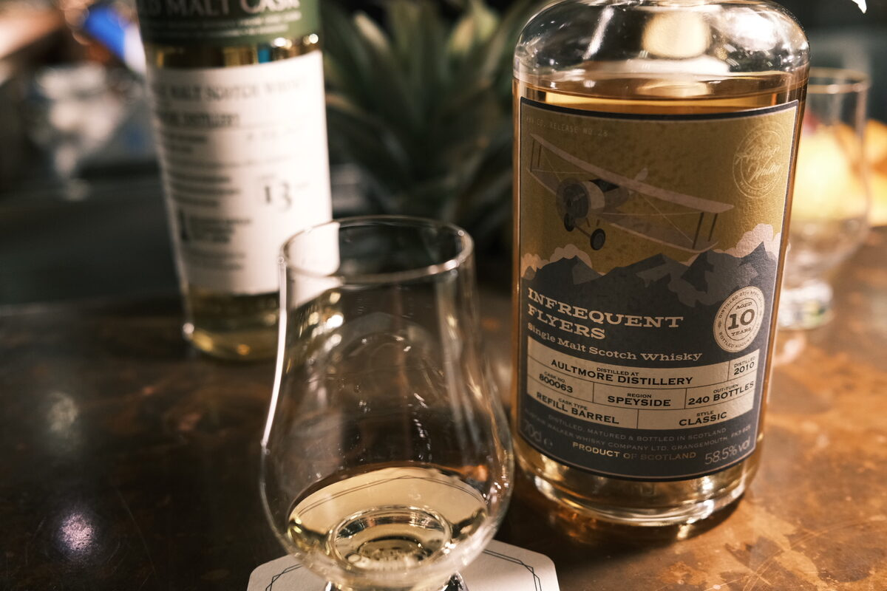

Aultmore 2010 Infrequent Fliers 10 years 58.5% (refill barrel)
One of Alistair Walker’s Infrequent Fliers – a relatively recent independent bottler. Now, picture a sunny day, a swim-in bar…
Colour Gold.
Nose Tropical explosion. Pineapples and bananas. Pina colada. Pineapple chocolates. Honey and perfume. A little grassy, fresh. Some mint. Candied apples and vanilla. Malt. With water, some nectarines and white grapes shine through. Back to bananas! But those candy bananas?
Palate Pina colada again. Creamy and spicy — chilli, cayenne. Pineapples, bananas, mangoes. Very tropical. Brown sugar syrup. With water, more malt.
Finish Mint. Dessicated coconut and pineapple juice. White chocolate and almonds. Bananas (again…). Caramel and a hint of cherries. Long. Warming. A touch of oak. With water, minty notes come to the fore, with some cream.
Comments If we’ve smoke bombs, peat bombs, sherry bombs, then this is a tropical bomb. Lovely malt. Impressive clarity. Pina colada, anyone? 88/100.

Posted by Dominic on 09 May 2021